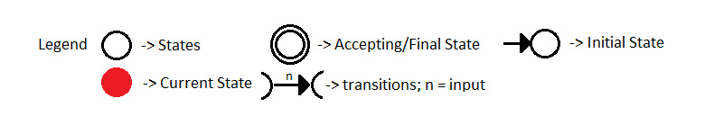

Deterministic Finite Automata
Deterministic Finite Automata (DFA) - from the word deterministic, has a principle where it can only be in, and transition to, "one state" at a time for a given input. A DFA can have a transition (change of state) based on the set of inputs it has.
The definition of Deterministic Finite Automata is a 5-tuple (Q,Σ,I,F,δ) where:
- Q: finite set of States.
- ∑: finite set of Inputs.
- q: the Initial/Starting State.
- F: finite set of Final/Accepting States.
- δ: Transition Function.
The transition function of a DFA can be defined as δ: Q x ∑→Q. This means that the cross product of an element of set Q(states) and an element of set ∑(inputs) will have a transition to an element of set Q.
Graphical Representation of DFA
- The states are represented by vertices (circles).
- The arc or arrow labeled with input/s show the transitions.
- The initial state is marked with plain arrow.
- The final state/s are marked by a double circle.
Example 1:
Problem: Create a DFA with ∑ = {0, 1} that accepts all strings that has '10' in it.
Let:
Q = {A, B, C} or The set of states
∑= {0, 1} or The set of inputs
I = {A} or The initial state
F = {C} or The set of Final State
Transition Diagram Simulator:
The simulator will simulate the inputs one-by-one so that you can observe the transitions. You need to click simulate for every inputs you have.
Transition Table:
| ∑ = 0 | ∑ = 1 | |
|---|---|---|
| Q = A | A | B |
| Q = B | C | B |
| Q = C | C | C |
Transition Tables are another way of representing a Finite Automata. The Table shows the transition of a state for a given input. For example, when State A gets an input 0, the transition of the State would stay in State A as stated in the table. However, if State A got an input 1, the transition of State would go to State B.
Example 2:
Problem: Create a DFA with ∑ = {0, 1} that accepts all strings ENDING with '01'.
Let:
Q = {A, B, C} or The set of States
∑ = {0, 1} or The set of Inputs
I = {A} or The Initial State
F = {C} or The set of Final States
Transition Diagram Simulator:
The simulator will simulate the inputs one-by-one so that you can observe the transitions. You need to click simulate for every inputs you have.
Transition Table:
| ∑ = 0 | ∑ = 1 | |
|---|---|---|
| Q = A | B | A |
| Q = B | B | C |
| Q = C | B | A |
This Table shows the transition of a state for a given input. For example, when State A gets an input 0, the transition of the State would be State B as stated in the table. However, if State A got an input 1, the transition of State would stay in State A.
1. Finite State Automata's key definition is a _______.
a) 4-Tuple
b) 5-Tuple
c) 6-Tuple
d) Unlimited-Tuple
Answer: B
Explanation: Finite Automata has 5-Tuple where Q = the finite set of States. ∑ = the finite set of Inputs. I = the Initial/Starting State where. F = finite set of Final/Accepting States. δ = Transition Function.
2.) Transition Function of DFA
a) ∑ x Q -> ∑
b) Q x ∑ -> ∑
c) ∑ x Q -> Q
d) Q x ∑ -> Q
Answer: D
DFA's transition function is the cross product of Q(State) and ∑(Input) which will have a result of Q.
3.) The Principle of DFA
a) Multiple State at a time
b) One State at a time
c) none of the above
Answer: B Explanation: A DFA can only be in and Transition to ONE STATE at a time.
4.) A DFA's transition function returns
a) A Boolean
b) An input
c) A set of States
Answer: C Explanation: The transition function of DFA is Q x ∑ -> Q.
5.) Statement 1: A Finite automata can be represented in a table; Statement 2: The nodes/vertices can be FA's states in the Diagram; Statement 3: The edges or arcs can be used for transitions in the Diagram
a) Statement 1 is false but Statement 2 and 3 are correct
b) Statement 1 and 2 are correct while 3 is wrong
c) None of the above
d) All of the above
Answer: D Explanation: Finite automata can be represented by the table. The diagram shows nodes/vertices for states while the edges are for transitions